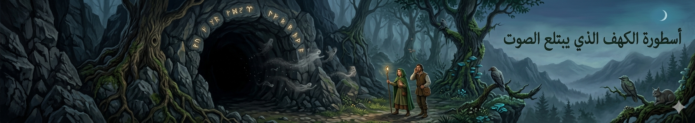
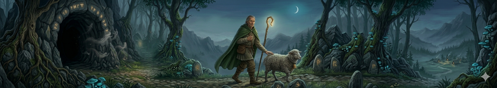
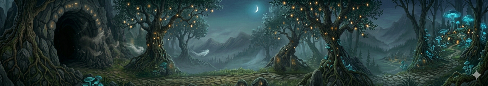
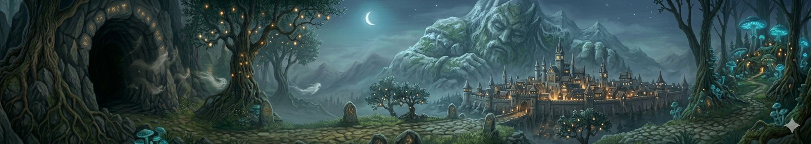

"في كل حكاية.. فلسطين"

أسطورة الكهف الذي يبتلع الصوت
في جبال المنطقة يوجد كهف عميق، إذا دخلته لا تسمع لصوتك صدى. كان الناس يرمون الحجارة داخله فلا يسمعون ارتطامها، وكأن الكهف يبتلع كل الأصوات. لذلك اعتقد البعض أنه باب لعالم آخر أو مكان تسكنه أرواح قديمة تحرسه.

أسطورة الراعي الذي لا يضل الطريق
تقول الحكاية إن راعيًا غريبًا كان يظهر في الجبال عندما يضيع أحد المسافرين. كان يظهر فجأة، يدلهم على الطريق الصحيح، ثم يختفي قبل أن يُسأل عن اسمه. ومع الوقت، صار الناس يعتقدون أنه “حارس الجبال” الذي لا يظهر إلا وقت الحاجة.

أسطورة ضوء الزيتون في الليل
في ليالي الصيف الهادئة، كان بعض المزارعين يقولون إنهم يرون أضواء صغيرة بين أشجار الزيتون. هذه الأضواء تتحرك ببطء ثم تختفي مع الفجر. واعتقد الناس أنها أرواح الأرض أو علامة على كنوز قديمة مدفونة تحت الجبال.

أسطورة الجبل الذي يحرس المدينة
كان أهل سلفيت يقولون إن أحد الجبال المحيطة “يراقب” المدينة. فإذا اقترب خطر، تظهر فوق قمته سحابة غريبة أو ضوء غير مألوف. لذلك كان الجبل يُعامل باحترام كبير، وكأنه حارس صامت لا ينام.